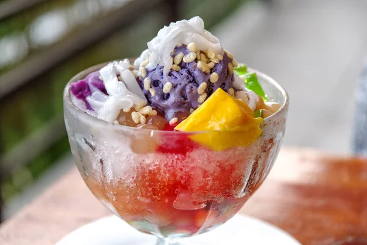
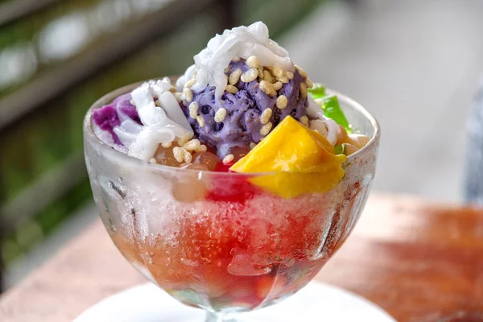

Delicacies
The Philippines, with its rich cultural tapestry, offers an array of food delicacies that reflect its diverse heritage and history. One of the most iconic dishes is Adobo, a savory stew made with pork or chicken marinated in soy sauce, vinegar, garlic, and spices, slow-cooked to tender perfection. Another beloved dish is Sinigang, a tangy soup often made with pork, shrimp, or fish, simmered with tamarind, tomatoes, and various vegetables, creating a flavorful and comforting experience. These dishes, among others, highlight the Filipino knack for balancing bold flavors and utilizing local ingredients.

 

In addition to these mainstays, the Philippines is renowned for its unique and adventurous street food. Balut, a fertilized duck egg with a developing embryo, is a famous delicacy that offers a rich, savory taste and is often enjoyed with a pinch of salt and vinegar. Isaw, grilled chicken or pork intestines skewered and marinated, is another popular street food that provides a delightful mix of textures and flavors. These delicacies, while sometimes challenging to the uninitiated, showcase the Filipino spirit of culinary innovation and the nation's deep appreciation for food as a vital part of its cultural identity.